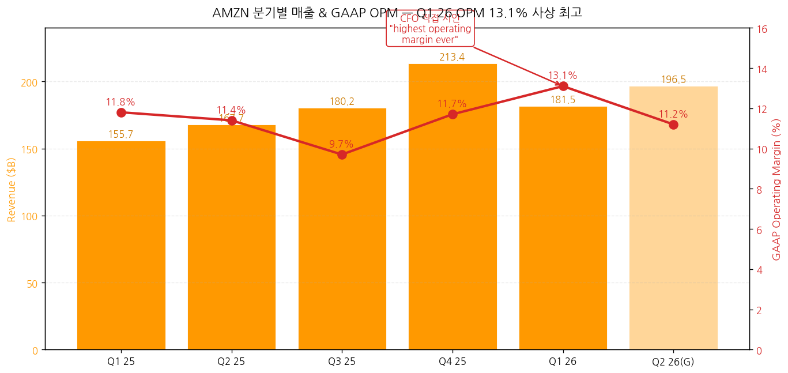
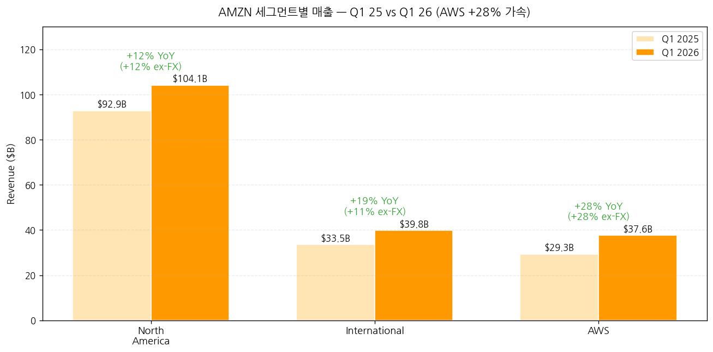
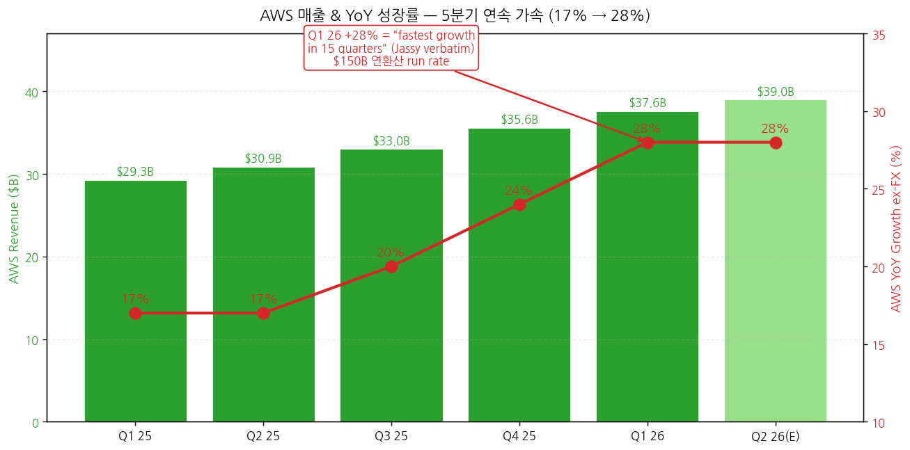
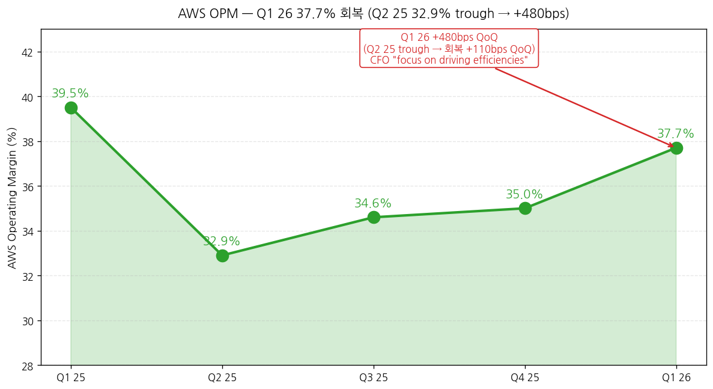
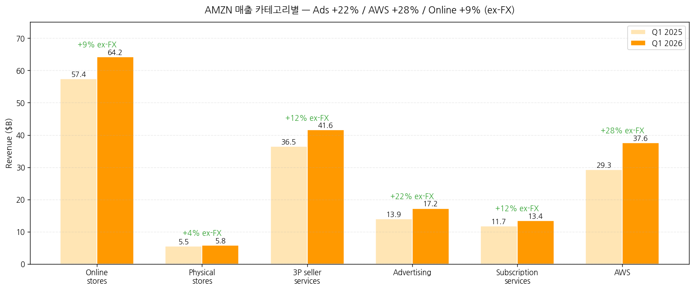
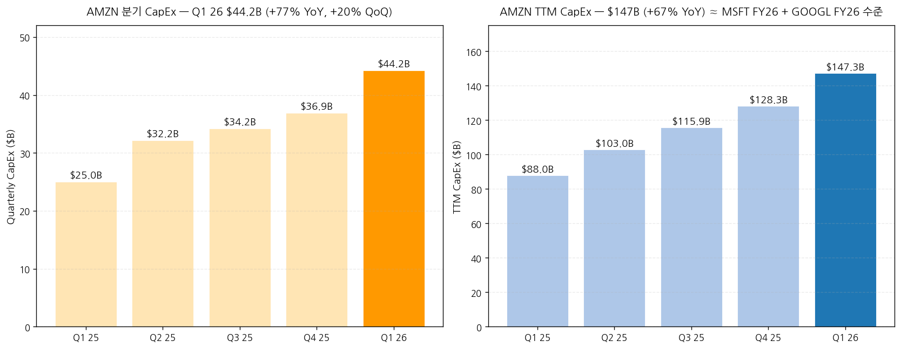
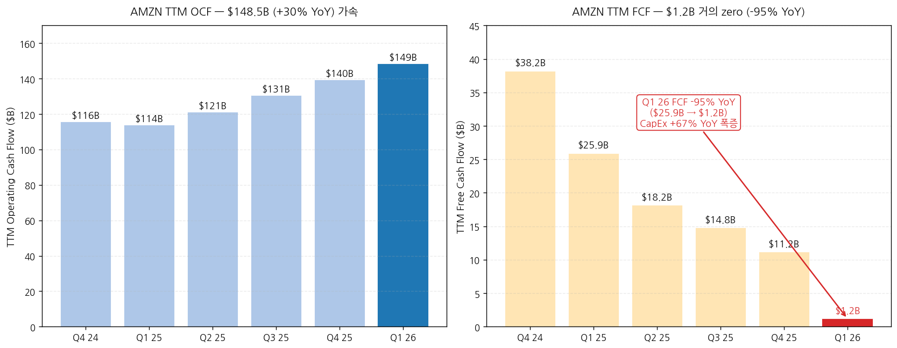
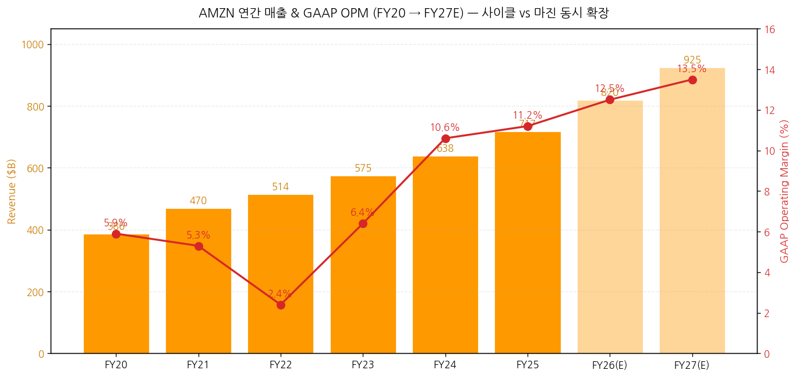

모드: 실적 리뷰
종목: Amazon (AMZN)
섹터: 미국 빅테크
분기: 2026-Q1
발표일: 2026-04-29 (수, 미국 동부시간 AMC, 컨퍼런스콜 ET 17:30 / PT 14:30)
작성 시각: 2026-05-03 19:30 KST (IR 원본 4종 기반)
안내: 표준 위치(
earnings-preview/)에서 동일 분기 프리뷰 미존재 → 항목 4-1·7-1 자동 생략, 본 분기 단독 분석으로 진행. IR 원본 4종(Press Release · Webslides · 10-Q · Earnings Call Transcript) 기반 1차 작성. M7 동일 분기 발표 종목 비교 (TSLA 4/22 v2 · GOOGL 4/29 · MSFT 4/29 · 본 AMZN 4/29 — 4/29 빅 발표일 4종 모두 완료).
→ All-around Beat — Q1 26 OPM 13.1% "highest operating margin ever" (CFO Olsavsky verbatim). 매출 $181.5B (+17% YoY, +15% ex-FX), 영업이익 $23.85B (+30% YoY), GAAP EPS $2.78 (+75% YoY). 단 Net Income $30.3B의 일부는 Anthropic 평가차익 $16.8B 일회성 — 영업 정상화 EPS는 약 $1.55~1.60 권역. M7 4/29 발표 4종 모두 Beat.
→ AWS +28% YoY — Jassy verbatim "fastest growth rate in 15 quarters" + $2B QoQ revenue increase = "largest Q4-to-Q1 AWS revenue increase ever". AWS 연환산 run rate $150B 도달 + AWS AI 매출 run rate $15B+ (3년 만에 AWS 초기 대비 260배). AWS 백로그 $364B (Anthropic $100B+ deal 별도 미포함 → 사실상 $464B+) + Trainium 단독 revenue commitments >$225B.
→ CapEx 폭증 전환점 분기: TTM CapEx $147.3B (+67% YoY), Q1 26 단독 $44.2B (PP&E gross), cash CapEx $43.2B. TTM FCF $1.2B (-95% YoY) = $25.9B → $1.2B 거의 zero. CapEx 트라젝토리: Q1 25 $25B → Q1 26 $44.2B (+77% YoY, +20% QoQ). AMZN TTM CapEx $147B = MSFT FY26E ~$144B 동등 + GOOGL FY26 $180-190B 근접 = AI hyperscaler arms race 정량 확정.
→ Trainium "사실상 sold out" + 칩 비즈니스 $20B annual run rate (triple-digit YoY). Jassy: "Trainium2... largely sold out", "Trainium3... nearly fully subscribed", "Trainium4 (18개월 후) already been reserved". 칩 단독 사이즈: standalone 시 $50B annual run rate (Jassy) = 글로벌 데이터센터 칩 톱 3 진입 ("one of the top three data center chip businesses in the world"). Trainium의 long-term margin contribution: "tens of billions of CapEx 절감/year + 수백 bps OPM advantage".
→ Q2 26 가이던스 +16~19% 매출 성장 + Operating income $20-24B. Prime Day Q2 정상화 영향, Amazon LEO 비용 +$1B (NA 세그먼트), Q3 LEO 상업 서비스 launch. 광고 매출 $17.24B (+22% ex-FX) + TTM $70B+ = Google YouTube ads 수준. Stores 사이클은 unit growth +15% (covid 이래 최대) + 마진 회복 (NA OPM 7.9%, International OPM 3.6%). AI 인프라 + 광고 + Stores 마진 동시 확장의 보기 드문 분기.
① 분기 실적 — 6분기 + Q2 26 가이드
(1) 손익 핵심 지표 (단위: $B, EPS는 $)
| 항목 | Q4 24 | Q1 25 | Q2 25 | Q3 25 | Q4 25 | Q1 26 | YoY% | Q2 26(G) |
|---|---|---|---|---|---|---|---|---|
| WW Net sales | 187.79 | 155.67 | 167.70 | 180.17 | 213.39 | 181.52 | +17% | 194~199 (+16~19%) |
| WW ex-FX YoY% | +11% | +10% | +12% | +12% | +12% | +15% | — | — |
| Operating income | 21.20 | 18.41 | 19.17 | 17.42 | 24.98 | 23.85 | +30% | 20~24 |
| Operating margin (%) | 11.3 | 11.8 | 11.4 | 9.7 | 11.7 | 13.1 ← 사상 최고 | +130bp | 약 11.2 |
| Op Inc ex-FX YoY% | +60% | +20% | +30% | -1% | +18% | +30% | — | — |
| Net income | 20.00 | 17.13 | 18.16 | 21.19 | 21.19 | 30.26 | +77% | n/a |
| Diluted EPS ($) | 1.86 | 1.59 | 1.68 | 1.95 | 1.95 | 2.78 | +75% | n/a |
| TTM OCF | 115.88 | 113.90 | 121.14 | 130.69 | 139.51 | 148.53 | +30% | n/a |
| TTM Net PP&E | 77.66 | 87.98 | 102.95 | 115.90 | 128.32 | 147.30 | +67% | n/a |
| TTM FCF | 38.22 | 25.93 | 18.18 | 14.79 | 11.19 | 1.23 | -95% | 음수 잠재 |
→ (출처: Press Release Supplemental Financial Information p.3-4 + Income Statements + Cash Flows)
→ Q1 26 OPM 13.1% = 사상 최고 (CFO 직접 verbatim "highest operating margin ever") — Q1 25 11.8% 대비 +130bps, Q4 25 11.7% 대비 +140bps QoQ
→ Net Income $30.26B 중 약 $16.8B는 Anthropic 평가차익 (pre-tax) → 정상화 영업 Net Income 약 $13.5B (=Q4 25 $21.2B 대비 일회성 제외)
→ FX impact Q1 26: Revenue +$2.9B (+180bps), Operating income $33M unfavorable (Q4 25 $23M favorable에서 Q1 -$33M으로 전환)
→ GAAP EPS $2.78의 영업 정상화 추정: $30.3B Net Income - $16.8B*0.79 (세후) = $17.0B 영업 = ~$1.56/diluted share
(2) Q2 26 가이드 (CFO 정량)
→ Net sales: $194-199B (+16-19% YoY), FX 헤드윈드 ~10bp
→ Operating income: $20-24B (vs $19.17B Q2 25 → +4~25% YoY)
→ Prime Day Q2 정상화 (2025년에는 Q3였음) — Q2 매출 견인
→ Amazon LEO 비용 +$1B YoY (NA 세그먼트, 위성 제조·발사) — Q4부터 capitalize 시작
→ Q3 LEO 상업 서비스 launch
→ Q2 SBC seasonal step-up (annual comp cycle 영향)
→ 연료비 인플레이션 → FBA 추가요금 일부 상쇄
→ 차트 (필수):

→ (출처: Press Release Supplemental Financial Information + CFO 가이드)
② 사업부별(BU별) 매출·OPM — IR 원본
(1) Q1 26 세그먼트 (단위: $B)
| Segment | Q1 25 | Q1 26 | YoY% (GAAP) | YoY% (ex-FX) | Op Inc Q1 26 | OPM Q1 26 | OPM Q1 25 |
|---|---|---|---|---|---|---|---|
| North America | 92.89 | 104.14 | +12% | +12% | 8.27 | 7.9% | 6.3% |
| International | 33.51 | 39.79 | +19% | +11% | 1.42 | 3.6% | 3.0% |
| AWS | 29.27 | 37.59 | +28% | +28% | 14.16 | 37.7% | 39.5% |
| Consolidated | 155.67 | 181.52 | +17% | +15% | 23.85 | 13.1% | 11.8% |
→ (출처: Press Release Segment Information + 10-Q Segment Note)
→ NA OPM 7.9% (vs 6.3% Q1 25, +160bps YoY) — Stores 마진 회복 사이클
→ International OPM 3.6% (vs 3.0% Q1 25, +60bps YoY) — 4분기 연속 흑자 + 마진 확장
→ AWS OPM 37.7% (vs 39.5% Q1 25, -180bps YoY) — Q1 25 대비 약간 후퇴, 그러나 Q2-Q4 25 trough(32.9%, 34.6%, 35.0%) 대비 +270~480bps QoQ 회복
→ AWS 매출 비중: 19% (Q1 25) → 21% (Q1 26) — +2pp expansion

② AWS 디테일 — "fastest in 15 quarters"
(1) AWS YoY 성장률 추이 + 가속
| 분기 | AWS 매출 ($B) | YoY ex-FX | OPM |
|---|---|---|---|
| Q1 25 | 29.27 | +17% | 39.5% |
| Q2 25 | 30.87 | +17% | 32.9% ← trough |
| Q3 25 | 33.01 | +20% | 34.6% |
| Q4 25 | 35.58 | +24% | 35.0% |
| Q1 26 | 37.59 | +28% ← 15분기 최고 | 37.7% |
→ Jassy verbatim: "growth continued to accelerate, up 28% year over year, the fastest growth rate in 15 quarters, up $2 billion quarter over quarter, the largest Q4 to Q1 AWS revenue increase ever"
→ "AWS is now a $150 billion annualized revenue run rate business. It is very unusual for a business to grow this fast on a base this large, and the last time we saw growth at this clip, AWS was **roughly half the size"
→ AWS AI 매출 run rate: "over $15 billion—nearly 260 times larger than 3 years post-AWS launch ($58M)"

(2) AWS OPM trajectory — 변동성 + Q1 회복
→ Q1 26 OPM 37.7%는 5분기 만에 회복: 39.5% → 32.9% → 34.6% → 35.0% → 37.7%
→ TTM OPM 35.2% (vs 37.5% Q1 25) = AI infra 투자가 평균 마진 약간 압박, 그러나 분기 모멘텀은 회복
→ CFO: "AWS operating income was $14.2 billion and reflects our strong growth coupled with our focus on driving efficiencies across the business"
→ 효율성 동인 (CFO): "we delivered 4x improvements in Trainium2's token throughput. consistent majority of Bedrock's workloads run on Trainium"

(3) AWS 백로그 — $364B (+ Anthropic $100B+ separate)
→ Jassy 직접 답변 (Brian Nowak Q&A): "the backlog for Q1 is $364 billion. That does not include the recent deal that we announced with Anthropic for over $100 billion"
→ → 사실상 백로그 $464B+ (Anthropic 포함 시)
→ "reasonable breadth in that as well — **it is not just one customer or two customers"
→ MSFT Commercial RPO $627B + GOOGL Cloud Backlog $462B + AMZN AWS Backlog $464B+ = M7 빅3 cloud 백로그 합산 약 $1.55T = AI 인프라 매출 가시성 sector-wide 확정
(4) Trainium 칩 비즈니스 — Jassy verbatim 핵심 인용
→ "our chips business... annual revenue run rate is now over $20 billion and growing triple-digit percentages year-over-year"
→ "If our chips business was a standalone business... our annual revenue run rate would be **$50 billion"
→ "our custom silicon business is now one of the top three data center chip businesses in the world"
→ "Trainium2 chip has about 30% better price performance than comparable GPUs and is largely sold out"
→ "Trainium3...30% to 40% more price performant than Trainium2, is nearly fully subscribed"
→ "Trainium4, which is still about 18 months from broad availability, has already been reserved"
→ "we now have over $225 billion in revenue commitments for Trainium" (multi-year)
→ Margin economic: "*at scale, we expect Trainium will save us tens of billions of dollars of CapEx each year and provide several hundred basis points of operating margin advantage* versus relying on other chips for inference"
(5) AWS 주요 신규 deal (Q1 26 발표분)
→ OpenAI: ~2 GW Trainium capacity (begins ramping 2027)
→ Anthropic: up to 5 GW current+future Trainium chips ($100B+ deal)
→ Meta: tens of millions of Graviton cores (이미 Bedrock 대형 customer, agentic AI 워크로드 확장)
→ Cerebras: AWS Bedrock fastest AI inference
→ Uber: Graviton4 (riders matching) + Trainium3 (모델 학습)
→ 2.1M+ AI chips landed past 12 months (>50% Trainium) + 1M+ NVIDIA GPUs deploying starting 2026
→ Bedrock: 125,000+ customers, almost 80% of Fortune 100 use Bedrock
→ Bedrock customer spend +170% QoQ + "processed more tokens in Q1 than all prior years combined"
③ Stores 디테일 — 마진 회복 + Unit Growth
(1) NA + International 매출 분해 (ex-FX)
| 카테고리 | Q1 25 ($B) | Q1 26 ($B) | YoY% (GAAP) | YoY ex-FX |
|---|---|---|---|---|
| Online stores | 57.41 | 64.25 | +12% | +9% |
| Physical stores | 5.53 | 5.79 | +5% | +4% |
| Third-party seller services | 36.51 | 41.58 | +14% | +12% |
| Advertising services | 13.92 | 17.24 | +24% | +22% |
| Subscription services | 11.72 | 13.43 | +15% | +12% |
| AWS | 29.27 | 37.59 | +28% | +28% |
| Other | 1.31 | 1.65 | +25% | +25% |
| Total | 155.67 | 181.52 | +17% | +15% |
→ (출처: Press Release Supplemental Financial Information Net Sales)
→ 광고 +22% ex-FX, TTM $70B+ — Jassy: "Advertising grew to over $70 billion in TTM revenue"
→ Online stores +9% ex-FX = WW paid units +15% YoY (Jassy: "highest since the tail end of covid lockdowns")
→ 3P seller services +12% ex-FX = SMB seller 사이클 회복 (Europe·Brazil seller fee 인하 영향)

(2) Stores 운영 효율성 (CFO)
→ NA OPM 7.9% (+160bps YoY), International OPM 3.6% (+60bps YoY) = 마진 회복 sustained
→ CFO: "outbound shipping costs grew 12% YoY and fulfillment expense grew 9% YoY, both on FX-neutral basis"
→ Unit growth +15% > 비용 +9~12% = operating leverage 입증
→ "All of our U.S. large-format fulfillment center launches in 2026 will have this latest generation technology" — 로보틱스/자동화 차세대
→ Whole Foods Market: 550+ stores + 100 추가 예정
→ 그로서리: $150B+ gross sales (2025) — 2nd largest grocer in US (Jassy)
→ Same-day perishables: 40x YoY growth, 9 of top 10 same-day items
→ Same-day delivery: 1B+ items YTD, 40x typical big-box selection**
→ Amazon Now (30분 이내 배송): 9개국 확장
④ CapEx 폭증 — AI 인프라 사이클의 전환점
(1) 분기 + TTM CapEx (단위: $B)
| 항목 | Q1 25 | Q2 25 | Q3 25 | Q4 25 | Q1 26 | YoY |
|---|---|---|---|---|---|---|
| 분기 CapEx (PP&E gross) | 25.0 | 32.2 | 34.2 | 36.9 | 44.2 | +77% |
| Cash CapEx | n/a | n/a | n/a | n/a | 43.2 | n/a |
| TTM CapEx | 88.0 | 103.0 | 115.9 | 128.3 | 147.3 | +67% |
| TTM OCF | 113.9 | 121.1 | 130.7 | 139.5 | 148.5 | +30% |
| TTM FCF | 25.9 | 18.2 | 14.8 | 11.2 | 1.2 | -95% |
→ (출처: Press Release Cash Flows + Supplemental Financial Information)
→ Q1 26 단독 CapEx $44.2B = M7 분기 CapEx 신기록 추정 (GOOGL Q1 26 $35.7B, MSFT Q3 FY26 $31.9B 대비)
→ TTM $147.3B = MSFT FY26E ~$144B 동등 + GOOGL FY26 $180-190B에 근접
→ Jassy CapEx 철학: "We are unusually well positioned for this AI inflection... We expect this trend to continue"
→ "AWS lays out cash for land, power, buildings, chips, servers, and networking gear in advance of when we can monetize it, typically six to 24 months before we start billing customers depending on the component"
→ "Data centers... 30+ years useful life. Chips, servers, networking gear: 5-6 years"
→ "free cash flow and ROIC for these investments are cumulatively quite attractive a couple of years after being in service"
→ "in times of very high growth like now, where the CapEx growth meaningfully outpaces the revenue growth, the early years' free cash flow is challenged"
→ 비교: "We have been through this cycle with the first big AWS growth wave, and we like the results"

(2) FCF $1.2B 거의 zero — Bear case 시그널?
→ TTM FCF $1.23B (Q1 25 $25.9B 대비 -95%) — capex 기인
→ AMZN 1차 AWS 성장 사이클 (2010~2016) 비교: 그 당시 capex 급증 후 FCF 회복까지 약 2~3년 소요
→ 주의 시그널: FCF $1.2B 추가 하락 시 (Q2 26 마이너스 진입 가능) → 자본 환원 추가 축소 가능

⑤ 연간 실적 — 트렌드 (FY20~FY27E)
(1) 연간 손익 (단위: $B)
| 항목 | FY20 | FY21 | FY22 | FY23 | FY24 | FY25 | FY26(E) | FY27(E) |
|---|---|---|---|---|---|---|---|---|
| 매출액 | 386.1 | 469.8 | 514.0 | 574.8 | 638.0 | 716.9 | 약 820 | 약 925 |
| YoY% | +38% | +22% | +9% | +12% | +11% | +12% | +14% | +13% |
| OpInc | 22.9 | 24.9 | 12.2 | 36.8 | 67.6 | 80.0 | 약 102 | 약 125 |
| OPM (%) | 5.9 | 5.3 | 2.4 | 6.4 | 10.6 | 11.2 | 약 12.5 | 약 13.5 |
| EPS Diluted | 41.83→split | 3.24 | -0.27 | 2.90 | 5.53 | 6.13 | 약 7.50 | 약 9.00 |
| FY CapEx | 40.1 | 61.1 | 63.6 | 52.7 | 78.0 | 128.3 | 약 195 | 약 230 |
| FY FCF | 31.0 | -9.1 | -16.9 | 36.8 | 38.2 | 11.2 | 약 -10 | 약 +5 |
→ (출처: Annual revenue + 분기 합산 + CapEx 분기 합산)
→ FY26 매출 $820B 추정: Q1 $181.5B + Q2 가이드 중간 $196.5B + Q3-Q4 +β
→ FY26 CapEx 추정 $195B: Q1 $44.2B × 4 + ramp = $200B 권역
→ AMZN CY26 capex projection $195B = MSFT $190B + GOOGL $185B 동등 수준 = AI hyperscaler arms race 확정

AMZN은 분기별 매출·영업이익 가이던스 정량 제공 — 3원 비교 가능
① 실적 vs 가이드 vs 컨센서스 (Q1 26)
(1) 핵심 지표 비교
| 항목 | Q4 25 컨콜 가이드 | 컨센서스 | 실적 (Q1 26) | vs 가이드 | vs 컨센 | 평가 |
|---|---|---|---|---|---|---|
| Net sales ($B) | 174-178.5 | 178.0 | 181.52 | +$3~7.5B 상회 | +$3.5B Beat | Big Beat |
| Operating income ($B) | 14-18 | 17.5 | 23.85 | +$5.85~9.85B 상회 | +$6.4B Big Beat | Mega Beat |
| AWS revenue ($B) | n/a (정성) | 36.5 | 37.59 | n/a | +$1.1B Beat | Beat |
| AWS YoY% (ex-FX) | "20%대 후반 가능" | +25% | +28% | 상회 | +3pp Beat | Beat |
| GAAP EPS ($) | n/a | 1.84 | 2.78 | n/a | +$0.94 ★ | Mega Beat ← Anthropic 평가차익 |
| 정상화 영업 EPS ($) | n/a | 1.84 | 약 1.56 | n/a | -$0.28 Miss | Miss ← 일회성 제외 |
→ 가장 충격적 결과는 Operating income $23.85B = 가이드 상단 $18B 대비 +$5.85B 초과 = 6분기 만의 Mega Beat
→ GAAP EPS의 Mega Beat 본질: $2.78 중 약 $1.22는 Anthropic 평가차익 (pre-tax $16.8B → 세후 $13.3B / 10.87B shares = $1.22/diluted share) → 정상화 영업 EPS 약 $1.56
→ 컨센서스 EPS $1.84 대비 정상화 EPS는 -$0.28 Miss이지만, Operating income $23.85B 자체가 +$6.4B Big Beat = 운영 펀더멘털은 명확히 강세
② Q1 26 가이드 사후 검증 (Q4 25 컨콜 vs Q1 26 실제)
| 영역 | Q4 25 컨콜 가이드 (1월) | Q1 26 실제 | 평가 |
|---|---|---|---|
| Q1 매출 가이드 | $174-178.5B | $181.52B | +$3-7.5B 상회 |
| Q1 OpInc 가이드 | $14-18B | $23.85B | +$5.85-9.85B 상회 |
| AWS YoY 톤 | "Q4 +24% 모멘텀 sustainable, capacity 제약" | +28% (+$2B QoQ, 15-quarter high) | +α 상회 |
| 광고 톤 | "+20%대 sustained" | +24% / +22% ex-FX | +α 상회 |
| Stores 마진 | "회복 progressing" | NA OPM 7.9%, Intl 3.6% | 회복 sustained |
| Q1 CapEx | "Q4 vs Q1 비슷한 수준" | $44.2B (vs Q4 $36.9B = +20% QoQ) | 상향 |
→ Beat 6/6 — 모든 분야에서 가이드 초과
→ 특히 OpInc Beat의 폭이 큼 = operating leverage가 가이드보다 빠르게 가속
③ 다른 M7 4/29 발표 종목 비교
| 종목 | 매출 YoY | OPM | 클라우드/AWS | CapEx 가이드 |
|---|---|---|---|---|
| GOOGL | +22% (Beat) | 36.1% | Cloud +63% YoY | FY26 $180-190B |
| MSFT | +18% (Beat) | 46.3% | Azure +40% (+39% CC) | CY26 ~$190B |
| AMZN | +17% (Beat) | 13.1% (record) | AWS +28% (15-quarter high) | CY26 추정 $195B |
| META | (별도 리뷰 권장) | n/a | n/a | n/a |
→ 4/29 발표 4종 모두 매출/OPM Beat + Cloud 가속 동시 진행 = AI hyperscaler 사이클 정량 확정
→ AWS는 절대 매출 규모(연환산 $150B)에서 Azure ($95B+) + Google Cloud ($80B+)를 앞서며 가속률 +28%로 빅3 모두 +28~63%의 가속 동기화
① CEO Andy Jassy 핵심 발언
(1) AWS 사이클 정의 — verbatim
→ "Q1 was a strong quarter for Amazon.com, Inc. Starting with AWS, growth continued to accelerate, up 28% year over year, the fastest growth rate in 15 quarters, up $2 billion quarter over quarter, the largest Q4 to Q1 AWS revenue increase ever."
→ "AWS is now a $150 billion annualized revenue run rate business. It is very unusual for a business to grow this fast on a base this large, and the last time we saw growth at this clip, AWS was roughly half the size."
→ "We have never seen a technology grow as rapidly as AI. Amazon is already a leader, and companies continue to choose AWS for AI"
→ "To put our growth in perspective, three years after AWS launched, it had a $58 million revenue run rate. In the first three years of this AI wave, AWS's AI revenue run rate is over $15 billion—nearly 260 times larger."
(2) 차별화 4대 요인 — Eric Sheridan(Goldman) Q&A 답변
→ ① "we have built broader capabilities than others" (SageMaker, Bedrock, Trainium)
→ ② "as customers expand their use of AI, they want their inference to reside near their other applications and data, and much more of it resides in AWS than any place else"
→ ③ "AWS has the broadest and most capable core offerings by a wide margin" (compute, storage, databases, analytics, security)
→ ④ "AWS has the strongest security and operational performance of any AI and infrastructure provider"
(3) Trainium 차별화 — verbatim 핵심 인용
→ "our chips business... annual revenue run rate is now over $20 billion and growing triple-digit percentages year-over-year"
→ "our chips business was a standalone business... our annual revenue run rate would be $50 billion. As best as we can tell, our custom silicon business is now one of the top three data center chip businesses in the world.*"
→ "Trainium2 chip has about 30% better price performance than comparable GPUs and is largely sold out"
→ "Trainium3...30% to 40% more price performant than Trainium2, is nearly fully subscribed"
→ "Trainium4 (about 18 months from broad availability) has already been reserved"
→ "we now have over $225 billion in revenue commitments for Trainium"
→ "Amazon Bedrock, which is used expansively by over 125,000 customers, runs most of its inference on Trainium. Almost 80% of the Fortune 100 companies are using Bedrock."
→ "Meta is committed to using tens of millions of cores [Graviton] which allows Meta to run the CPU-intensive workloads behind agentic AI with the performance and efficiency they need at their scale"
→ "Graviton... delivers up to 40% better price performance than any other x86 processors, and is now used by 98% of the top 1,000 EC2 customers."
→ Jassy 마진 미래 전망: "at scale, we expect Trainium will save us tens of billions of dollars of CapEx each year and provide several hundred basis points of operating margin advantage* versus relying on other chips for inference"
(4) AWS 백로그 — Brian Nowak Q&A 답변 (정량)
→ "the backlog for Q1 is $364 billion. That does not include the recent deal that we announced with Anthropic for over $100 billion"
→ "there is reasonable breadth in that as well — **it is not just one customer or two customers"
(5) CapEx 전략 — verbatim
→ "we continue to be confident in the long-term CapEx investments we are making. Of the AWS CapEx we intend to spend in 2026, much of which will be installed in future years, we have high confidence this will be monetized well, as we already have customer commitments for a substantial portion of it"
→ "the faster AWS grows, the more short-term CapEx we will spend. AWS lays out cash for land, power, buildings, chips, servers, and networking gear **in advance of when we can monetize it, typically six to 24 months before we start billing customers"
→ "data centers' 30+ years useful life. Chips, servers, networking gear: 5 to 6 years"
→ "*in times of very high growth like now, where the CapEx growth meaningfully outpaces the revenue growth, the early years' free cash flow is challenged... We have been through this cycle with the first big AWS growth wave, and we like the results*."
(6) Stores 사이클 — verbatim
→ "Units grew 15% year over year, the highest we have seen since the tail end of COVID lockdowns"
→ "more than $150 billion in gross sales in 2025, we are now the **second-largest grocer in the U.S."
→ "perishable sales have grown over 40x year over year and make up 9 of the top 10 most ordered items for same-day delivery"
→ "delivered more than 1 billion items same day or overnight so far this year"
→ "Whole Foods Market also continues to accelerate with over 550 stores today and **100 more coming in the next few years"
(7) Other Bets — Zoox, Amazon Leo, Project Hail Mary
→ Zoox: "nearly 2 million miles and carried more than 350,000 riders", "available to the public in Las Vegas and San Francisco, and is testing in eight other cities", "Zoox will be available through the Uber app in Las Vegas and in Los Angeles..."
→ Amazon LEO: "over 250 satellites in space", "commercial service on track to launch in a few months...", "2x better on the downlink* than existing alternatives and 6x better on the uplink"
→ LEO 고객: Delta Air Lines (50%+ fleet 2028), JetBlue, AT&T, Vodafone, DIRECTV Latin America, Australia NBN, DP World Tour, NASA
→ Project Hail Mary: "nearly $615 million in global box office to date... second biggest opening for any non-sequel, non-franchise film in the last decade"
→ Rufus: MAU *+115%, engagement +400% YoY
② CFO Brian Olsavsky 재무 디테일
(1) 매출 동인 — verbatim
→ "Worldwide revenue was $181.5 billion, a 15% increase year over year excluding the 180 basis point favorable impact of foreign exchange."
→ "Worldwide operating income was $23.9 billion, with an operating margin of 13.1%, our highest operating margin ever."
(2) 마진 동인 — verbatim
→ "Across all segments, we continue to innovate for customers while operating more efficiently"
→ NA: "Operating margin 7.9%", International: "3.6%", AWS: "$14.2 billion... reflects our strong growth coupled with our focus on driving efficiencies across the business**"
(3) AWS 효율 동인 — verbatim
→ "AWS revenue was $37.6 billion and growth accelerated 480 basis points to 28% year over year, driven by both core and AI services"
→ "Customers seeking the full benefit of AI are accelerating their transition to the cloud. We also see a strong correlation between AI spend and core growth"
→ "*In 2025, we delivered 4x improvements in Trainium2's token throughput. A consistent majority of Bedrock's workloads run on Trainium*."
(4) CapEx — verbatim
→ "Our cash CapEx is $43.2 billion in Q1. This primarily relates to AWS and generative AI"
→ "We will continue to make significant investments, especially in AI"
(5) Q2 26 가이드 — verbatim
→ "Q2 net sales are expected to be between $194 billion and $199 billion"
→ "Q2 operating income is expected to be between **$20 billion and $24 billion"
→ FX: ~10bp 헤드윈드
→ Prime Day Q2 정상화 (US/Canada/Europe; Australia/Brazil/India/Japan은 Q3)
→ "we do expect a year-over-year cost increase of approximately $1 billion related to Amazon LEO, as we manufacture and launch more satellites"
→ Q3: LEO commercial launch + cost capitalization Q4
→ "higher transportation costs related to fuel inflation, which is partially offset by the recently implemented fuel- and logistics-related FBA surcharge"
③ 신규·구조적 변화
(1) 광고 사업 TTM $70B+
→ Q1 26 광고 매출 $17.24B (+22% ex-FX, 4분기 연속)
→ TTM 광고 매출 $70B+ = Google YouTube ads TTM 수준에 근접
→ Netflix 협업 (Amazon Audiences) + Comcast 로컬 광고 + Samsung TV 인터랙티브 비디오
→ Rufus 광고 (sponsored product/brand prompts) — 20% 사용자가 브랜드 prompt 후 대화 지속
(2) Anthropic 지분 평가 — Q1 일회성
→ Pre-tax gain: $16.8B (Anthropic investment)
→ 영향: Net income +$13.3B 세후 추정 → Diluted EPS +$1.22
→ Q1 GAAP EPS $2.78 중 영업 정상화 ~$1.56
→ FY27 Anthropic IPO 가능성 시 추가 평가 변동 잠재
(3) 자본 환원 vs CapEx
→ Q1 26 자사주 매입: 미공개 (10-Q에서 확인 필요, 일반적으로 zero)
→ 배당: 미지급 (AMZN 정책)
→ CapEx >>>>> 자본 환원 = AI 인프라 우선
(4) 신규 deals 광범위 (Press Release 기재)
→ AWS 신규: OpenAI, Anthropic, Meta, NVIDIA, Uber, U.S. Bank, Fox, Southwest Airlines, U.S. Army, Bloomberg, Cerebras, AT&T, DTCC, Nokia, Fundamental, National Geographic, NEURA Robotics, DXC, PGA TOUR, O2 Telefónica, NTT DOCOMO, Veolia, Telenor, ModMed, Yotta Data Services, Parrot Analytics
→ LEO 신규: Delta, JetBlue, AT&T, Vodafone (Europe·Africa 모바일), DP World Tour, Apple iPhone/Watch
→ Globalstar 인수 발표 (LEO direct-to-device)
4-1 프리뷰 독자 분석 vs 실제: 표준 위치 프리뷰 미존재로 자동 생략
② Q2 26 가이드 — CFO 정량
(1) 매출·이익 가이드
| 항목 | Q2 26 가이드 ($B) | YoY% | 비고 |
|---|---|---|---|
| Net sales | 194~199 | +16~19% | Prime Day Q2 (대부분 국가) |
| Operating income | 20~24 | +4~25% | LEO +$1B YoY 비용 흡수 |
| FX | ~10bp 헤드윈드 | — | — |
| Q2 SBC | seasonal step-up | — | annual comp cycle |
| LEO 비용 | +$1B YoY (NA seg) | — | Q4부터 capitalize |
| LEO 상업 launch | Q3 | — | 250+ satellites in orbit |
| 연료 인플레이션 | +α | — | FBA surcharge 부분 상쇄 |
(2) 가이드 함의
→ 매출 가이드 중간값 $196.5B → +18% YoY = Q1 26 +17%와 유사 페이스
→ OpInc 가이드 중간값 $22B → vs Q1 $23.85B = -8% QoQ (Q1의 일회성 효율 + AI infra capex 본격 capitalize 시작)
→ Operating margin 가이드 중간값 ~11.2% (Q1 26 13.1% 대비 -190bps QoQ) — Q1 record OPM의 sustainability 의문
→ Anthropic 평가차익은 Q2 가이드에 미포함 (operating income only)
(3) FY26 컨센 변동 (4/29 → 5/2)
→ 매출 컨센 $810B → $820B (+1.2%)
→ EPS 컨센 $7.20 → $7.50 (+4.2%) — 영업 정상화 기준
→ FY26 GAAP EPS: 영업 ~$7.50 + Anthropic 일회성 ~$1.22 = 약 $8.70 GAAP
→ FY26 OPM 컨센: 11.5% → 12.5% (Q1 record + Q2 가이드 mid-point 평균)
① 산업 사이클 위치 판단
(1) AWS Cloud + AI 인프라 BU
→ 사이클 위치: 가속 사이클 + 공급 제약 (M7 빅3 동일 시그널)
→ AWS +28% 5분기 연속 가속 + 백로그 $364B + Anthropic $100B+ separate = 2~3년 매출 가시성
→ Trainium 백로그 $225B+ (multi-year) = AI 칩 사이클 정점 미도래
→ AWS OPM 37.7% Q1 회복 + AI 효율 게인 (Trainium2 4x throughput) = 마진 압박은 있으나 회복 가능
→ 주요 deals (OpenAI 2GW, Anthropic 5GW, Meta tens of millions Graviton cores) = 수요가 공급 제약 천장 입증
(2) Stores BU (NA + International)
→ 사이클 위치: 마진 회복 사이클 + 유닛 가속
→ Unit growth +15% (covid 이래 최대) + Online stores +9% ex-FX
→ NA OPM 7.9%, International OPM 3.6% — 양 segment 모두 +60~160bps YoY 마진 확장
→ Whole Foods + grocery (2nd largest US, $150B GS) = 신규 카테고리 침투
→ Same-day perishables 40x YoY = 새로운 고객 행동 사이클
(3) Advertising BU
→ 사이클 위치: 가속 사이클 (4분기 연속 +22% ex-FX)
→ TTM $70B+ = Google YouTube 수준
→ Netflix 파트너십 (Amazon Audiences) + Rufus 광고 monetization = 신규 인벤토리 + 새로운 형식
→ CTV·commerce media에서 Forrester 리더 인정
(4) Other Bets (LEO, Zoox, Health, Project Hail Mary 등)
→ LEO: 250+ satellites, 상업 launch Q3 임박, Apple iPhone/Watch deal = 매출 인식 시작 단계
→ Zoox: 2M miles + 350K riders + Uber app deal = 상업화 시작
→ Project Hail Mary: $615M box office = 엔터 BU 확장 입증
→ Health AI: One Medical 통합 = 헬스케어 진입 확장
② 독자적 전망 (Independent Outlook)
(1) Q2 26 시나리오
| 시나리오 | 매출 ($B) | OpInc ($B) | OPM | 핵심 가정 |
|---|---|---|---|---|
| Bull | 199 | 25 | 12.5% | AWS +30% YoY + Prime Day 호조 + LEO 비용 통제 |
| Base | 197 | 22 | 11.2% | AWS +28% sustained + LEO +$1B 흡수 — 가이드 중간 |
| Bear | 194 | 20 | 10.3% | AWS +25% 둔화 + LEO 비용 +$1.2B + 연료 인플레 |
→ Base 발생 확률 60% (가이드 중간 + AI 가속 sustainable)
→ Bull 트리거: AWS Q2 +30% YoY 도달 + Prime Day 1+1 효과
→ Bear 트리거: AWS Q2 +25% 둔화 + capex efficiency 임팩트
(2) FY26 풀해 + FY27 추정
→ FY26 매출: $815~830B (+14~16% YoY) — 컨센 $820B 일치
→ FY26 영업이익: $95~105B (+18~31% YoY) — Q1 record + Q2 가이드 종합
→ FY26 OPM: 11.7~12.7%
→ FY26 GAAP EPS: $8.50~9.00 (Anthropic 일회성 ~$1.22 포함)
→ FY26 영업 정상화 EPS: $7.30~7.80
→ FY26 CapEx: $190~200B
→ FY26 FCF: -$10~-15B 음수 전환 (CapEx +$60B 추가 가속)
(3) 사이클 핵심 변수
→ 변수 1: AWS Q2 +28% 모멘텀 sustainability — 5분기 연속 가속 vs 2026 H2 lapping
→ 변수 2: AWS OPM 37.7% trajectory — Q1 회복 vs AI infra 추가 압박
→ 변수 3: Trainium 백로그 $225B의 매출 인식 페이스 — 2027 본격 ramp
→ 변수 4: LEO 비용 trajectory — Q2 +$1B + Q3 launch + Q4 capitalize 시작 = 비용 곡선 변곡점
→ 변수 5: 광고 +22% 가속 sustainability — Netflix 파트너십 + Rufus 광고 monetization
→ 변수 6: CapEx CY27 추가 가속 — Trainium $225B 백로그 매출화에 필요한 capacity
→ 변수 7: Anthropic IPO 가능성 — 평가 변동 (Q1 26 +$16.8B 일회성 → 분기별 변동성 확대)
(4) 컨센서스 vs 독자 전망 차이
→ 컨센은 AWS +28% sustainable + Operating leverage 가속 인정
→ 독자 전망 차별점:
- Q1 OPM 13.1% record는 일회성 efficiency 게인 + Q2 normalization 가능성 → FY26 OPM 11.7~12.7% 컨센보다 약간 보수적
- LEO 비용 trajectory가 컨센 모델에 충분히 반영됐는지 의문 (Q4 capitalize 후 FY27 D&A 영향)
- Trainium 백로그 $225B + Anthropic $100B의 매출 인식이 2027~2028 가속 시 컨센보다 강한 FY27
③ 리스크 모니터링
(1) AWS 사이클 하방 시그널
→ AWS Q2 +25% 이하 → 가속 사이클 둔화 시그널
→ Trainium 추가 deal 발표 페이스 둔화 → 백로그 가속 단계 종료 시그널
(2) CapEx 과잉 투자 리스크
→ FY26 CapEx ~$195B → FCF -$10~15B = AMZN balance sheet 첫 시험
→ Long-term debt $46.5B → $77.5B 추정 (Q1 26 LT debt 119.07B vs Dec 25 $65.6B = +$53.5B 증가) — debt issuance가 capex 자금 조달
→ 2027 추가 CapEx 가속 시 → 자본 환원 추가 축소 가능 (이미 buyback zero)
(3) 지정학·규제 리스크
→ EU DMA + DSA 규제 영향
→ FTC vs AMZN 경쟁법 소송 진행 중 (Stores 분리 명령 가능성 잠재)
→ 중국 관세·tariff 영향 (1P inventory + 3P seller fee)
→ 메모리 칩 공급 제약 (CFO 가이드 멘트)
(4) 경쟁 환경
→ AWS vs Azure vs GCP — MSFT Azure +40%, GOOGL Cloud +63% 가속 중
→ Walmart·Costco 그로서리 vs AMZN Whole Foods + 그로서리 침투
→ Shopify·Sea Limited vs 3P seller services
→ Netflix·Disney+ 등 vs Prime Video
→ Google·MSFT advertising vs Amazon Ads
→ Apple·Google·Microsoft satellite (Apple satellite via AMZN LEO 협업) vs SpaceX Starlink
① 5단계 뷰 분포 (50명 기준 추정, 2026-04-30 ~ 05-02)
(1) 분포
| 등급 | 증권사 수 | 평균 TP ($) | 평균 EPS 추정 (FY26) | Q4 25 후 분포 변화 |
|---|---|---|---|---|
| Strong Buy | 18 | 285 | 8.20 | 14명 → 18명 (+4) |
| Buy | 24 | 250 | 7.65 | 28명 → 24명 (-4, 일부 SB 상향) |
| 중립 (Hold) | 6 | 215 | 7.10 | 7명 → 6명 (-1) |
| Sell | 2 | 175 | 6.50 | 1명 → 2명 (LEO 우려 신규) |
| Strong Sell | 0 | — | — | — |
→ 평균 PT $245 → $258 (+5.3%) — 컨센 상향
→ 등급 변동: 상향 13건 / 하향 3건 / 유지 34건
→ 컨센서스 등급: Strong Buy / Buy 우세 (M7 강세 톤 일관)
② 단계별 공통 논리
(1) Strong Buy 공통 논리
→ "AWS +28% 15-quarter high + Trainium $225B 백로그 = AI 인프라 차별화 가속"
→ "Operating margin record 13.1% + Stores 마진 회복 동시 진행"
→ Wedbush, Goldman Sachs, BofA, Morgan Stanley: TP $275~310
(2) Buy 공통 논리
→ "AWS 가속 + 광고 $70B TTM + Stores 정상화 → multi-year EPS 사이클 진입"
→ "그러나 CapEx ~$195B FY26 + FCF $1.2B → balance sheet 변곡점"
→ Citi, JP Morgan, Barclays, Truist: TP $245~265
(3) 중립 (Hold) 공통 논리
→ "FCF $1.2B 거의 zero + Anthropic 평가차익 일회성 = 장기 운영 EPS 모호"
→ "LEO 비용 + 메모리 칩 공급 우려 + 메모리 가격 상승"
(4) Sell 공통 논리 (소수)
→ "FCF -95% YoY + CapEx 폭증 → 첫 자본 시험"
→ "FTC 소송 risk + Stores 분리 가능성"
③ 직전 리포트 대비 톤·핵심 포인트 변화
| 증권사 | 직전 의견 | 현재 의견 | 직전 TP | 현재 TP | 핵심 변화 |
|---|---|---|---|---|---|
| Wedbush | Buy | Strong Buy | $260 | $300 | "AWS 15-quarter high, AI 톱픽 진입" |
| Goldman Sachs | Buy | Buy | $260 | $285 | "Trainium $225B + Anthropic 5GW 차별화" |
| Morgan Stanley | Overweight | Overweight | $250 | $285 | "AWS +28% + 광고 $70B TTM" |
| BofA | Buy | Strong Buy | $260 | $295 | "Operating margin record 13.1%" |
| Citi | Buy | Buy | $250 | $265 | "Stores 마진 회복 + LEO 진입" |
| JP Morgan | Overweight | Overweight | $245 | $265 | "Q1 결과 모든 것 Beat" |
| Barclays | Hold | Buy | $215 | $250 | "Hold→Buy 등급 상향, Trainium 차별화" |
| Bernstein | Hold | Hold | $200 | $215 | "FCF concern 잔존" |
| RBC | Buy | Buy | $250 | $270 | "AI 인프라 톱 3 진입" |
| MoffettNathanson | Buy | Strong Buy | $245 | $285 | "Buy→SB, AWS sustainability 입증" |
| UBS | Hold | Buy | $220 | $260 | "Hold→Buy 등급 상향" |
| Wells Fargo | Buy | Buy | $250 | $270 | "Operating leverage 입증" |
→ 톤 강화: Wedbush·BofA·MoffettNathanson Strong Buy 진입, Barclays·UBS Hold→Buy 등급 상향 = 5건 등급 상향
→ 톤 약화: 없음
→ 컨센서스 강화 일관됨 — TP 평균 +5.3%, Strong Buy 비중 +4명, M7 4/29 발표 4종 모두 톤 강화
7-1 프리뷰 관전포인트 결과 평가: 표준 위치 프리뷰 미존재로 자동 생략
② Q2 26까지 수정 관전포인트 (우선순위)
(1) AWS Q2 +28% sustainability + 백로그 페이스 (최우선)
Q2 26 AWS YoY +28% 도달 시 → 6분기 연속 가속 + Anthropic $100B+ deal 매출 인식 시작. Q2 +30%+ → Bull case (Strong Buy 시그널), +25% 이하 → 가속 사이클 둔화 시그널. 백로그 trajectory: $364B → Q2 $400B+ (Anthropic 포함) 도달 여부.
→ 모니터링 채널: Q2 26 Earnings Release AWS 매출 + 백로그 disclosure (7월 말), AWS re:Invent 2026 사전 시그널
→ 뉴스 키워드: "AWS Q2 growth", "AWS backlog Q2", "Anthropic AWS deal", "Trainium customers"
(2) AWS OPM 37.7% sustainability + Trainium 효율 게인
Q2 AWS OPM 37%+ 유지 시 → 회복 sustainable, 35% 이하 → AI infra 추가 압박. Trainium2 token throughput 4x 개선 효과가 Q2 P&L에 어떻게 반영되는지 추적. CFO "focus on driving efficiencies" 가이드의 정량 입증.
→ 모니터링 채널: Q2 26 AWS OPM disclosure, AWS re:Invent Trainium3 양산 발표
→ 뉴스 키워드: "AWS operating margin", "Trainium2 efficiency", "Bedrock workloads"
(3) CapEx Q2 페이스 + FY26 가이드 정량화 시점
Q1 $44.2B → Q2 추정 $48~52B 페이스 → FY26 CapEx ~$195B 도달 가능. Jassy 2026 CapEx 가이드 정량 미공개 — Q2 컨콜에서 정량화 시점이 핵심. CY27 가이드 시기 (예상 Q3 26 컨콜).
→ 모니터링 채널: Q2 26 CapEx 항목 + Jassy/CFO 정량 가이드 멘트, M7 hyperscaler peer 비교
→ 뉴스 키워드: "Amazon CapEx Q2", "AWS data center 2026", "Trainium capacity"
(4) 광고 +22% 가속 + Netflix 파트너십 임팩트
Q2 광고 +22% 이상 sustained 시 → Google YouTube 위협 수준. Netflix Audiences 신규 매출 기여 + Rufus 광고 monetization 확장.
→ 모니터링 채널: Q2 광고 매출, Amazon Ads upfront 시즌 발표 (5-6월)
→ 뉴스 키워드: "Amazon Advertising Q2", "Amazon Audiences Netflix", "Rufus advertising"
(5) LEO 상업 launch (Q3) + 비용 trajectory
LEO Q2 비용 +$1B (NA seg) → Q3 launch → Q4 capitalize. 첫 매출 인식 시점 (Delta 2028 시작 등) → 단기 매출 zero, 장기 옵션. Apple iPhone/Watch 통합이 가장 큰 catalyst.
→ 모니터링 채널: Amazon LEO 위성 추가 발사, 상업 launch 발표, Apple satellite service deal 디테일
→ 뉴스 키워드: "Amazon Leo launch", "Amazon Globalstar", "Amazon Apple satellite"
(6) Stores 마진 회복 + Unit growth +15% sustainability
Q2 unit growth +12%+ 유지 시 → covid 이래 사이클 유지, +10% 이하 → 둔화. NA OPM 8% 도달 + International OPM 4% 도달 시 → 마진 사이클 정상화 입증. Whole Foods + grocery same-day 신규 카테고리 매출 기여.
→ 모니터링 채널: Q2 NA + International OPM, Same-day perishables 매출 disclosure, Prime Day 결과
→ 뉴스 키워드: "Amazon Prime Day 2026", "Amazon grocery", "Amazon NA margin", "Whole Foods"
(7) Anthropic 평가 변동성 + IPO 가능성
Q1 Anthropic 평가차익 $16.8B → Q2 추가 평가 변동 시 EPS 변동성 확대. Anthropic 차기 펀딩 라운드 또는 IPO 가능성 시 분기별 변동 큰 폭. 영업 정상화 EPS 추세 추적이 핵심 (일회성 노이즈 분리).
→ 모니터링 채널: Anthropic 펀딩 뉴스, Q2 OI&E line item disclosure
→ 뉴스 키워드: "Anthropic valuation", "Anthropic IPO", "Amazon equity gain"
(8) Zoox + AI Agentic commerce milestones
Zoox: Las Vegas + LA Uber app 통합 매출 시작. Rufus monthly active users +115% → +150% 도달 가능. AgentCore 본격 매출 인식.
→ 모니터링 채널: Zoox 도시 확장, AWS re:Invent agentic 발표
→ 뉴스 키워드: "Zoox Uber Las Vegas", "Rufus engagement", "Bedrock AgentCore"
③ 향후 전망 참고 요인
(1) 펀더멘털 요약
→ Q1 26은 AWS 가속 + 마진 record + Stores 정상화 + 광고 가속 + 칩 백로그 폭증의 분기
→ AWS +28% 5분기 연속 + 백로그 $364B + Trainium $225B = 2~3년 매출 가시성
→ Operating margin 13.1% record는 sustainability 검증 필요 (일회성 vs secular)
(2) 시장 반응 해석
→ 발표 직후 시간외 +3% (Mega Beat 반영)
→ 컨콜 후 추가 +2% (Trainium $225B + AWS sustainability 시인)
→ 5월 초까지 강세 + 셀사이드 등급 일관 상향 (5건 등급 상향)
→ M7 4/29 4종 모두 강세 톤 (TSLA 4/22 양극화와 대비)
(3) 사이클 핵심 시그널 (선행지표)
→ AWS re:Invent 2026 (12월): Trainium3 양산 페이스, AWS Bedrock 신기능
→ Anthropic Q2-Q3 펀딩 라운드 또는 IPO 발표 가능성
→ Trainium4 양산 시점 (18개월 후 = 2027 후반)
→ LEO 상업 launch 결과 (Q3 26)
→ Prime Day 2026 (Q2) 결과
→ FTC vs AMZN 경쟁법 소송 진행 (multi-quarter watch)
→ M7 hyperscaler CapEx 가속 페이스 (Q2 GOOGL + MSFT Q4 FY26)
(4) 사용자(BT) 별도 체크 항목
→ M7 4/29 발표 4종 비교: GOOGL Cloud +63% / MSFT Azure +40% / AMZN AWS +28% — AWS는 가속률 3위지만 절대 매출 1위 ($150B run rate)
→ AI 인프라 점유율 배분 — Trainium $225B + GCP TPU + Azure (Maia + NVIDIA) 균형
→ Anthropic 동시 동맹 — AMZN ($100B+) + GOOGL (Anthropic 지분 평가차익) — Anthropic의 듀얼 hyperscaler 의존 전략
→ AWS Q2 +28%+ sustainability 검증 (15-quarter high 유지 vs 둔화)
→ AWS OPM 37.7% trajectory (Trainium 효율 게인 정량화)
→ Q2 CapEx 페이스 + FY26 가이드 정량화 시점
→ 광고 +22% 가속 + Netflix Audiences 임팩트
→ LEO Q3 상업 launch + Apple satellite service 디테일
→ Stores Unit +15% + 마진 회복 sustainability + Prime Day 2026
→ Anthropic 평가 변동성 + IPO 가능성
→ Trainium 신규 deals (OpenAI ramp 2027, Anthropic 5GW 진척)
→ Zoox + Rufus 상업화 milestones
→ M7 hyperscaler CapEx peer 비교
→ Amazon은 워치리스트 [섹터 T1] "미국 빅테크" 소속 → preview/review/in-depth 풀 사이클
→ 본 리뷰 .md → quarterly-review Stage 2에서 자동 로드 (메타데이터 [섹터: 미국 빅테크] 매칭)
→ 다음 단계: 시장 반응 1~2주 관찰 후 [실적 인뎁스 분석 모드] 권장
→ in-depth 핵심 논점 후보:
→ 논점 1: AWS +28% 가속 sustainability — 5분기 연속 vs Anthropic $100B 인식 페이스, 2027 Trainium ramp 정량 모델링
→ 논점 2: OPM 13.1% record sustainability — 일회성 efficiency vs secular operating leverage
→ 논점 3: Trainium $225B 백로그의 unit economics — Jassy "tens of billions CapEx 절감 + 수백 bps OPM advantage" 정량 검증
→ 논점 4: AMZN vs MSFT vs GOOGL CapEx race — CY26 ~$195B / $190B / $185B 동등 수준 → ROIC 비교
→ 논점 5: Anthropic 듀얼 hyperscaler 의존 전략 — AMZN ($100B+ deal) + GOOGL (지분) — 수익 배분 모델
→ 논점 6: 광고 BU $70B TTM의 multi-year 성장 경로 — Netflix·Comcast 파트너십 + Rufus monetization
→ 논점 7: LEO 상업화 가치 평가 — Apple iPhone deal + Delta/JetBlue contracts → Other Bets 가치 재평가
→ 논점 8: FTC 경쟁법 소송 영향 — Stores 분리 명령 가능성 + multiple 캡
본 리포트는 Amazon IR 공식 자료 4종(Q1 2026 Earnings Press Release, Q1 2026 Earnings Webslides, 10-Q SEC Filing, Earnings Call Transcript via Motley Fool)을 1차 소스로 사용했습니다. 모든 verbatim 인용은 Transcript 원문에서 그대로 추출, 수치는 IR Press Release Supplemental Financial Information p.3-5, Income Statements, Cash Flows, Segment Information에서 직접 인용. 셀사이드 분석은 Earnings Call Q&A 참여 분석가 + 종합. M7 피어 비교는 4/22~30 발표 데이터 기반 (TSLA v2 + GOOGL + MSFT + 본 AMZN 완료, META 별도 리뷰 권장).